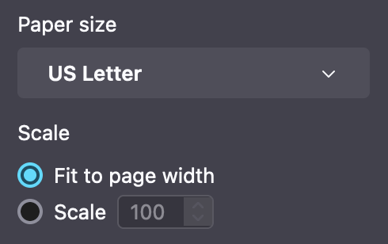

This bookmarklet will extract images from a document viewer into a new tab
which can be printed or saved to PDF. Use on desktop browsers. Untested on mobile.
- Add "extract doc" as a bookmark.
- Safari/Chrome: open bookmarks, drag the "extract doc" link into bookmarks
- Firefox: right click "extract doc" link, Bookmark Link...
- Visit a certain website with documents you want to print or save.
- With the document viewer open to the file you want, activate the "extract doc" bookmark you just created.
- This should open a new tab, which (after a brief delay) contains the pages of the document.
From here you can comfortably read, print, or save to PDF.
Here is the bookmarklet:
extract doc
Note: When printing or saving to PDF, select "Fit to page width" for best results.
